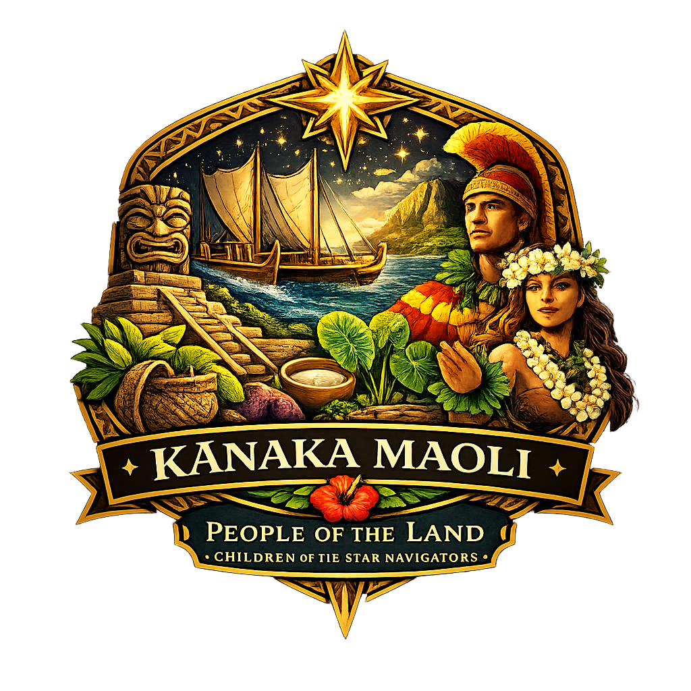
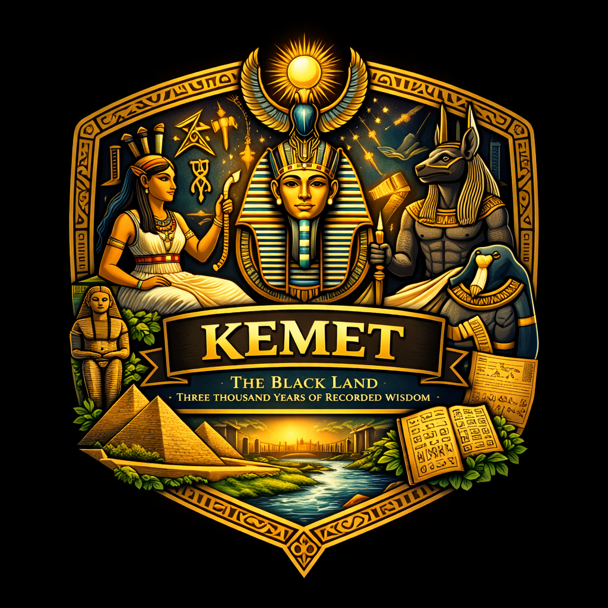
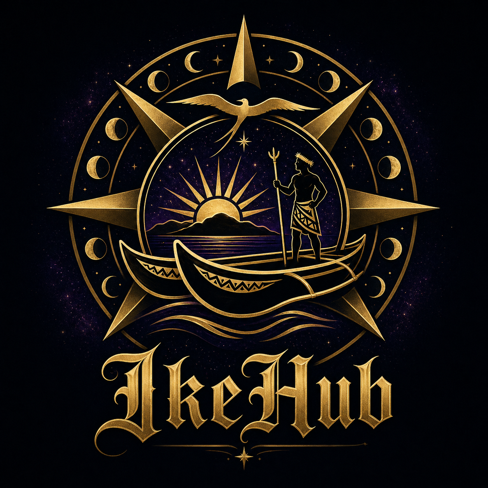
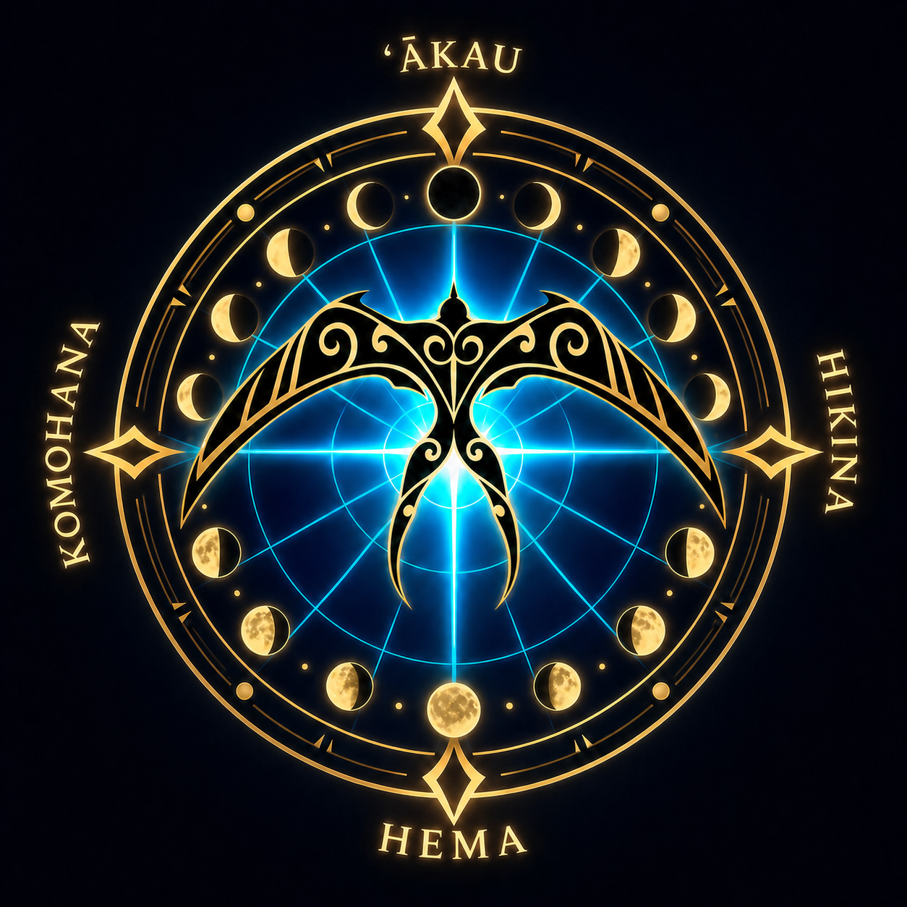

Navigate the
Stars of Knowledge
A sacred space where Hawaiian and Kemetic wisdom traditions are honoured, studied, and woven into living understanding. Each concept is a star. Each connection, a constellation. Hover to discover. Click to explore.
Two Traditions.
One Cosmic Understanding.
Two civilizations on opposite sides of the Earth, both beginning in primordial darkness and water, both arriving at the same sacred truth about how a human being is meant to walk in the world.

Kānaka Maoli
People of the Land · Children of the Star Navigators
The Native Hawaiian people developed one of the most sophisticated civilizations in the Pacific — from the 2,102-line Kumulipo to the engineering precision of 400+ fishponds. A complete and deeply integrated understanding of cosmos, land, and the human place within both. This is not ancient history. It is a living tradition.

Kemet
The Black Land · Three Thousand Years of Recorded Wisdom
The ancient Egyptians called their land Kemet — they were African. Their civilization endured for over 3,000 years, producing knowledge in cosmology, medicine, ethics, and philosophy that shaped every major civilization that followed. Not the ancestors of Western civilization — African civilization at its height.
The Bridge
Aloha and Maʻat. Two names for the same sacred alignment.
Two civilizations on opposite ends of the Earth, separated by tens of thousands of miles and thousands of years. When you place their creation traditions and ethical frameworks side by side, the parallels are not superficial — they are structural. The same deep architecture of understanding, expressed through different languages, pointing to the same cosmic realities. Both begin in primordial darkness. Both unfold through paired complementary forces. Both arrive at the same understanding of cosmic order, personal ethics, and ecological responsibility as one indivisible truth.
More Traditions Being Woven In
Aloha & Maʻat —
Two Languages for One Truth
Developed independently, on opposite ends of the Earth, thousands of years apart — yet structurally identical philosophical frameworks for what it means to be human.
Alo (presence) + Hā (breath of life) = the presence of the divine breath, shared. Aloha is not a greeting — it is a complete ethical, relational, and spiritual operating system for how a human being walks in the world.
Truth, justice, balance, harmony — the organizing principle of the universe itself. The stars move in Maʻat. The Nile floods in Maʻat. Every act of justice or cruelty either sustains or threatens the cosmic order.
Strength expressed through gentleness. True power never needs to be cruel.
Feeding the hungry, clothing the naked — among the 42 Declarations. Kindness as cosmic law.
Working in alignment with ʻohana and ʻāina. No one stands apart from the web of life.
The Pharaoh's primary duty: uphold Maʻat. When the ruler fails, the cosmos tilts into Isfet.
Unwavering integrity rooted in spirit. Truth is not situational — it is the ground you stand on.
The heart is weighed against the Feather of Maʻat. A heart heavy with falsehood cannot pass.
Not an environmental position. A spiritual obligation. The land is your ancestor.
Among the Declarations: interfering with natural systems is a moral violation. Earth is sacred trust.
"Aloha is the intelligence with which we meet life."
— Attributed to Aunty Pilahi Paki"Speak Maʻat. Do Maʻat. For she is mighty, she is great, she endures."
— Kemetic inscription, Tomb of Rekhmire, c. 1425 BCEPart of the Ikeverse Ecosystem
Each platform is a portal into a different dimension of knowledge, creativity, technology, and community — all woven together in the Ikeverse.


